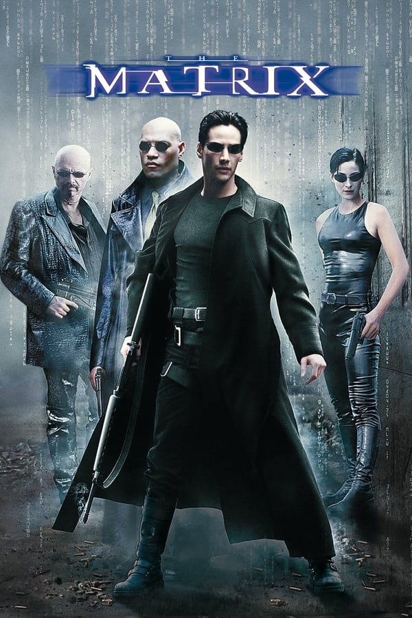
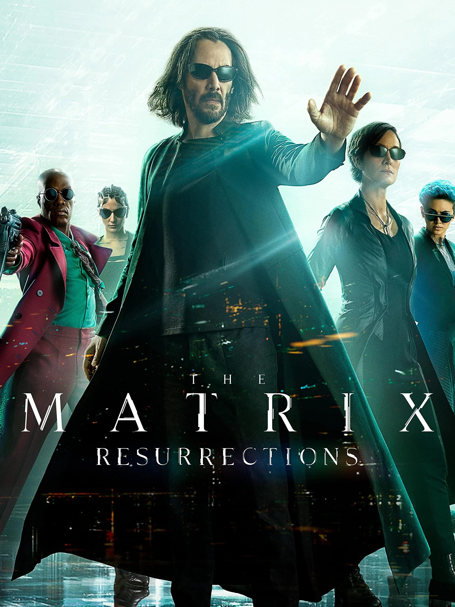
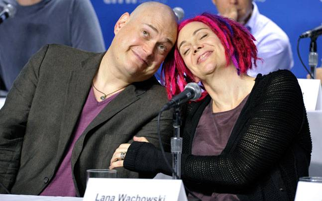
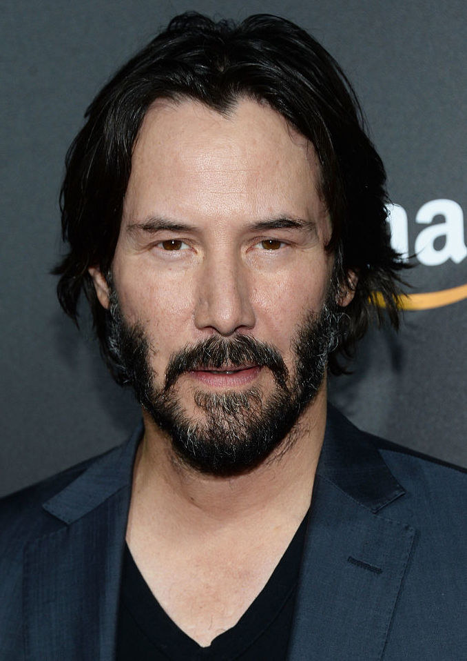
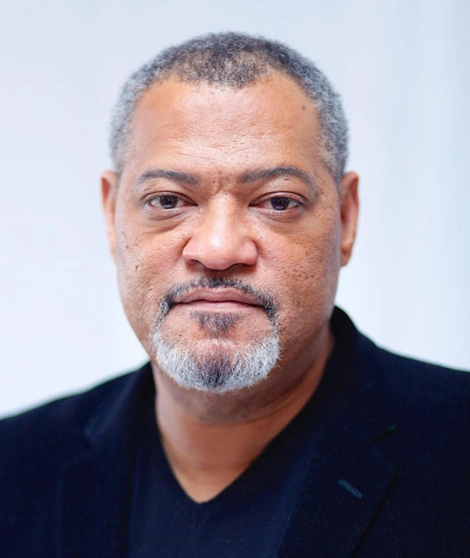
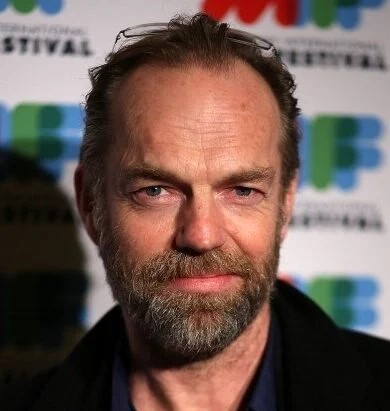
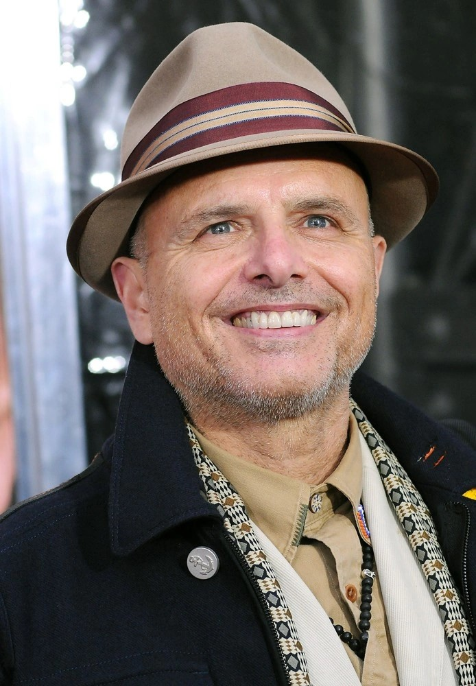

Unveiling the digital realm of the Matrix, where reality is just a simulation...
The Matrix (1999)
The Matrix (1999) tells the story of Neo, a computer hacker who is led to fight an underground war against powerful computers who have constructed his entire reality with a system called the Matrix. Neo is contacted by Morpheus, a legendary computer hacker branded a terrorist by the government, who reveals the truth about the Matrix. The Matrix is a simulated reality that intelligent machines have created to distract humans while using their bodies as an energy source. Neo joins Morpheus and Trinity, another skilled hacker, in their fight against the machines and the agents of the Matrix. Neo quickly learns to bend the rules of the Matrix, which allows him to perform superhuman feats such as dodging bullets and flying. He also learns that he is the "One," a prophecy that says he will free humanity from the Matrix. In the climactic battle, Neo defeats the agents of the Matrix and saves Morpheus from execution. He then escapes from the Matrix and vows to free the rest of humanity.
The Matrix Reloaded (2003)

The Matrix Reloaded (2003) is the sequel to the 1999 film The Matrix. It picks up six months after the events of the first film, with Neo and Trinity now romantically involved. The film opens with Zion, the last human city on Earth, under siege by a massive army of machine Sentinels. Neo and Trinity return to the Matrix to rescue Morpheus and the Keymaker, a program who can help Neo access the Source, the central hub of the Matrix. Along the way, Neo must contend with the Merovingian, a powerful exile from the Matrix, and Agent Smith, who has now been freed from the Matrix and is multiplying exponentially. Neo also learns more about his role as the One and the prophecy that says he will save humanity. In the climax of the film, Neo confronts the Architect, the creator of the Matrix. The Architect reveals that Neo is trapped in a cycle of rebirth and death, and that the Matrix is designed to fail and be rebooted every time the One refuses to make the necessary choices. Neo breaks the cycle by choosing to save Trinity, even though it means sacrificing himself. This choice sets in motion a chain of events that will lead to the eventual liberation of humanity from the Matrix. The Matrix Reloaded is a more complex and challenging film than its predecessor, but it is also a visually stunning and thought-provoking film that explores themes such as free will, choice, and the nature of reality.
The Matrix Revolutions (2003)

The Matrix Revolutions (2003) is the sequel to The Matrix Reloaded and the final film in The Matrix trilogy. It picks up immediately after the events of the previous film, with Neo trapped in a limbo world between the Matrix and the real world, and Trinity critically injured. Meanwhile, the machines have launched a massive assault on Zion, the last human city on Earth. Morpheus, Niobe, and the other defenders of Zion fight to hold off the machines, but they are outnumbered and outgunned. Neo eventually escapes from the limbo world and returns to the Matrix, where he must confront Agent Smith, who has now become more powerful than ever before. Neo also learns that he can stop the machines by sacrificing himself and becoming the Source. In the final battle, Neo defeats Agent Smith and sacrifices himself to stop the machines from destroying Zion. The Matrix is rebooted, but this time, the humans have a choice: they can stay in the Matrix or leave it. The Matrix Revolutions is a visually stunning and action-packed film, but it is also a more philosophical film than its predecessors. It explores themes such as sacrifice, choice, and the nature of reality. The film's ending is ambiguous, leaving it up to the viewer to decide whether Neo is truly dead or not. However, the film's message is clear: humanity has the power to choose its own destiny.
The Matrix Resurrections (2021)
The Matrix Resurrections takes place 60 years after the events of The Matrix Revolutions. Neo is now living a seemingly ordinary life as Thomas Anderson, a game designer who created a trilogy of video games based on his dreams of the Matrix. However, Neo begins to question his reality when he is contacted by a woman named Tiffany (Moss), who claims to know him as Trinity. Neo soon learns that he is still trapped in the Matrix, and that the machines have created a new version of the Matrix that is more powerful and dangerous than ever before. Neo must once again team up with Trinity and Morpheus (Yahya Abdul-Mateen II) to free humanity from the Matrix. The Matrix Resurrections is a complex and challenging film that explores themes such as reality, free will, and the nature of love. It is also a visually stunning film with innovative action sequences. The film was met with mixed reviews from critics, with some praising its originality and ambition, while others criticizing its pretentiousness and lack of focus. However, the film was a commercial success, grossing over $159 million worldwide.
The Directors
Lana and Lilly Wachowski are visionary filmmakers who have pushed the boundaries of science fiction and action cinema with their groundbreaking films. They are best known for creating The Matrix trilogy, which revolutionized the way special effects were used in film and had a profound impact on popular culture. The Wachowskis are also pioneers in LGBTQ representation in film. They are both trans women, and their films often explore themes of identity and self-discovery. Their work has helped to raise awareness of the trans experience and has inspired a generation of LGBTQ filmmakers. In addition to The Matrix trilogy, the Wachowskis have also directed other acclaimed films such as Cloud Atlas, Sense8, and Jupiter Ascending. They are known for their ambitious and visually stunning films, as well as their complex and thought-provoking storytelling. The Wachowskis are two of the most influential filmmakers of their generation. Their films have entertained and inspired audiences around the world, and they have helped to shape the landscape of modern cinema. Here is a quote from Lana Wachowski that sums up their visionary approach to filmmaking:
"We're not interested in making movies that are just about entertainment. We want to make movies that make people think, that challenge them to see the world in a new way."
The Cast
- Keanu Reeves as Neo
- Laurence Fishburne as Morpheus
- Carrie-Anne Moss as Trinity
- Hugo Weaving as Agent Smith
- Joe Pantoliano as Cypher